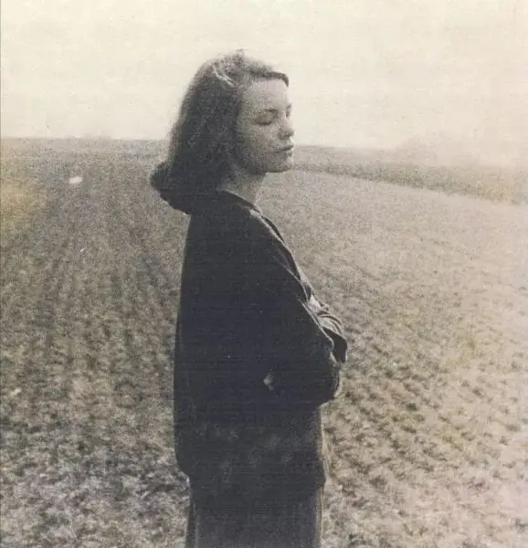
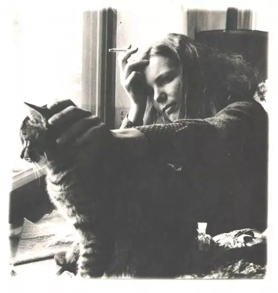
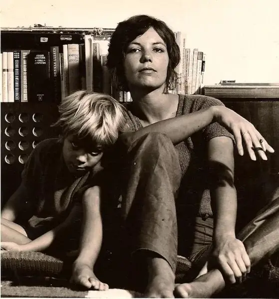
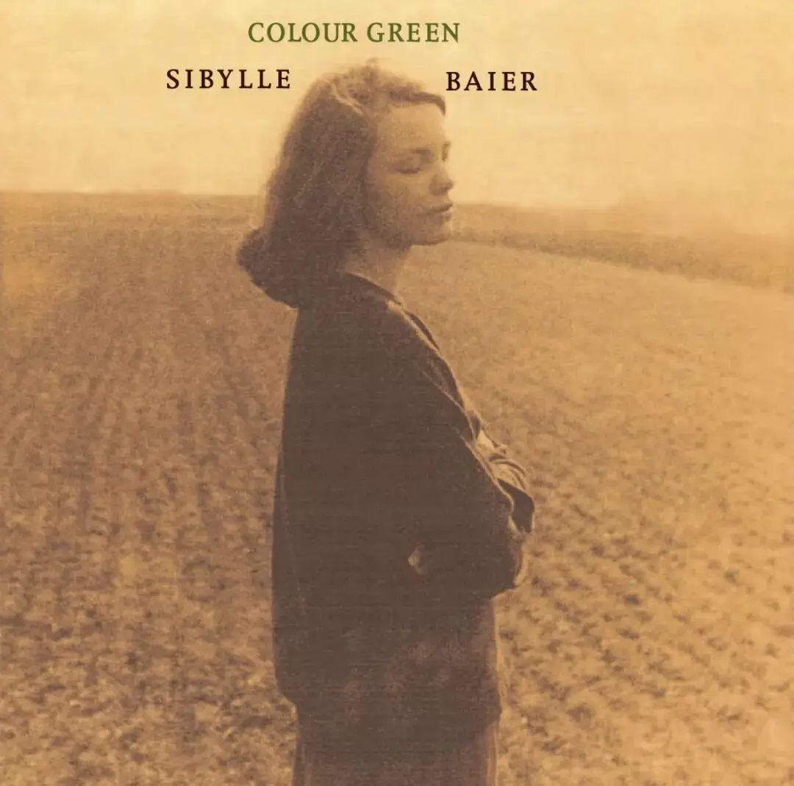
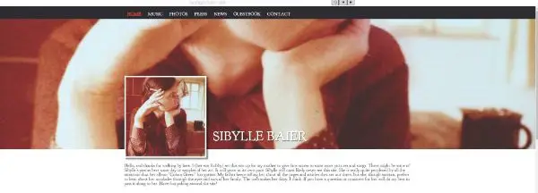
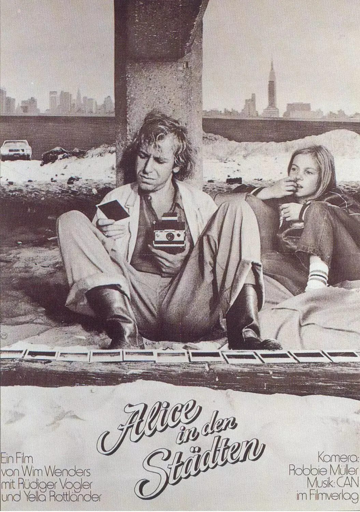
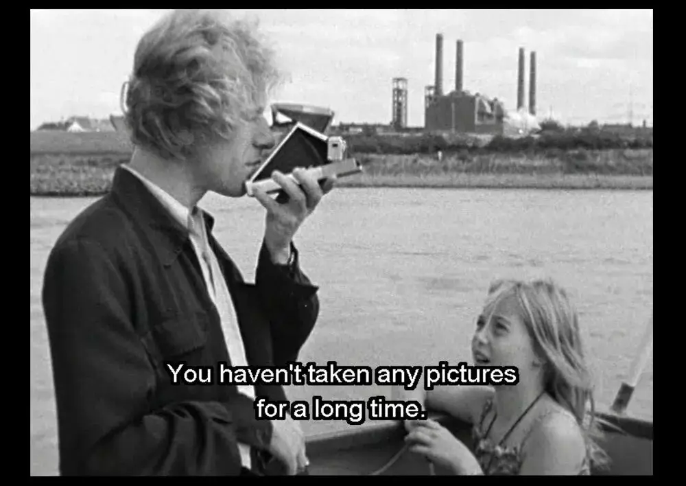
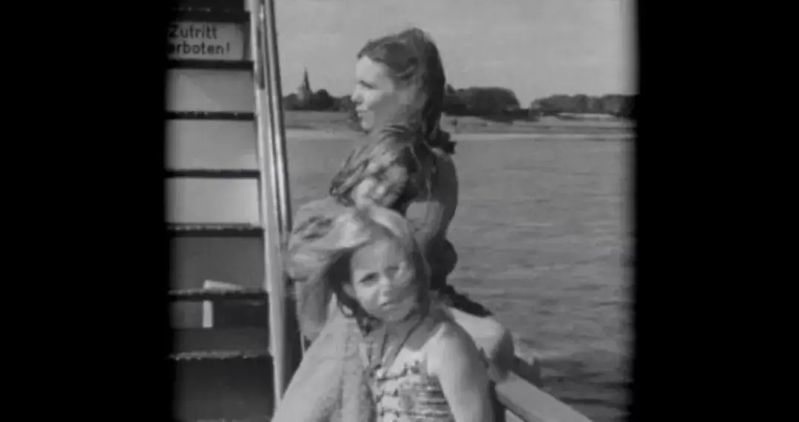
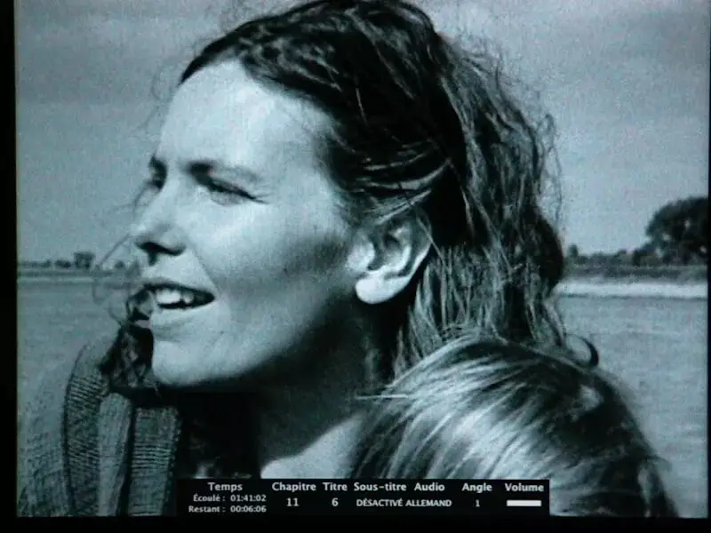

正文共计5000字左右
预计阅读时间6min
转载请在后台回复“授权”

这首动人的歌出自一个德国女孩
她叫Sibylle Baie
（后文简称拜尔）
出生在二战结束后的1950年代
拜尔很特别
她的身上有种难以言说的忧郁气息
她喜欢读艾略特的诗歌
曾无数次被他的文字打动
艾略特曾写道
“
我们是空心人
我们是稻草人
互相依靠
头脑里塞满了稻草唉！
当我们一起耳语时
我们干涩的声音
毫无起伏，毫无意义
”
拜尔正是艾略特所说的空心人
那年二月
拜尔16岁
她一个人宅在家中
心情糟透了
几乎让她无法喘气
她的一个好友将拜尔从家中拖出
带她进行了一场公路旅行
他们从法国斯特拉斯堡出发
穿过美丽的阿尔卑斯山
最后来到热内亚
这次旅行让拜尔倍感鼓舞和温暖
回到家中
她写下了她人生中的第一首歌
《Remember the Day》
（记住那一天）
拜尔在歌中写道
“
我不再思索什么是好，什么是不好
身边只有海水的气息和遥远的彼方
我只是伫立海边看着冰凉苍老的海水
心里满是温柔明亮的无法言语的情感
我做了该做的事情
一切都好
”
拜尔有种天赋
她能捕捉到潜伏在沮丧背后的美丽
她可以用安静、清澈的声音
将琐碎生活里的感动唱出来

1970年代
拜尔以舞台剧表演为生
并坠入爱河成为了一个妻子
之后拥有了两个孩子
一个男孩和一个女孩
夜晚，当家人熟睡后
拜尔便拿起自己的吉他
在月色下
轻轻拨动着尼龙弦
哼唱着自己创作的歌曲
这些歌曲朴实无华、细腻动人
充满着拜尔对于生活、家人、朋友
毫无保留的诚实、渴望、爱和挣扎
歌曲《I lost something in the hills》中
拜尔说
在过去几年里
每当她走在小山坡中
总是忍不住落泪
她醉倒在茂盛的野草中
她被茉莉花的芬芳吸引
也为那些老树而感动
她的心丢失在大自然的美好中
当回到死气沉沉的都市中时
拜尔便变得沮丧、易怒
她静静依靠在窗前
呆望着远处
梦想着永远离开城市
因为只有那矮矮的山坡才能给她希望
出于对大自然的热爱
拜尔很喜欢绿色
她写了一首歌就叫《Colour Green》
这首歌描述了一段有趣的友谊
拜尔常常梦到自己穿着绿色毛衣走在纽约的街头
于是，一天晚上
她坐在一个椅子上织毛衣
并碰到一个红发女人
女人告诉拜尔
“我很喜欢你的衣服
我们可以彼此照顾
当你需要帮助时
我会在你的身边”
拜尔非常感动
她在这首歌中反复唱着朋友那句动人的话
if you need help
I'll be here
拜尔非常珍视友谊
在《the end》中
面对和朋友之间的隔阂
拜尔非常悲伤
滑动下方
查看完整诗词
▼
It's the end, friend of mine,
我的朋友，是情尽之时了，
it's the end, friend of mine,
我的朋友，是情尽之时了，
time is over where we could simply say I love you,
时光静止在我们再无法说出“我爱你”的时点，
now you opened the door,
如今你夺门而去，
leave me crying,
留我一人哭泣，
trying to embrace you again,
我试着再次拥抱你，
trying to face this damn situation man,
我试着面对这糟糕的处境，
I can't,
而我无法做到，
It's the end, friend of mine,
我的朋友，是情尽之时了，
It's the end, sweet friend of mine,
我亲爱的友人是情尽之时了，
dear friend, I cannot tell the reasons why we started well,
亲爱的朋友，我无法辨别我们开始相爱的理由，
good time, give me some wine when you open the door,
时光正好，你夺门而出且让我酒醉一回，
you seem hurt, don't try to speak a word to me,
你好像受到了伤害 一句话都别和我说了，
what on earth could really go wrong with you and me?
究竟是何致使我们关系破裂？
yet its the end, friend of mine,
我的朋友，是情尽之时了，
it's the end, sweet friend of mine,
我亲爱的友人是情尽之时了，
time seems to be over where we could simply say I love you,
时光静止在我们再无法说出“我爱你”的时点，
now you opened the door,
如今你夺门而去，
I feel cold,
我感到寒冷，
why can't I hold you in my arms,
为何我无法拥你入怀，
told you that life is short but love is old,
告诉你生命虽然短暂 但爱却地老天荒，
it's the end, friend of mine,
我的朋友，是情尽之时了，
it's the end, sweet friend,
我的朋友，是情尽之时了。
除了友谊
拜尔在音乐中记录了专属于自己的爱情
《William》直接以对方的名字作为歌名
歌曲中拜尔说
威廉是他见过最悲伤、最特别的男孩
他深深地吸引着拜尔的目光
她在歌中充满渴望地唱着
“
talk to me
”
虽然简单
但却毫不做作地表现了她对爱情的渴望
大概不久
他们步入婚姻
在歌曲《tonight》
她描述了下班后的温暖
滑动下方
查看完整诗词
▼
今晚我下班回家时 十分疲惫，
Tonight when i came home from work,
今晚我下班回家时，
There he unforeseen sat in the kitchen,
我并未料到他会坐在厨房里，
Buttering himself a bread,
为他自己的面包抹着黄油，
And the cat was on his knee,
猫咪伏在他膝盖上，
And smiled at me,
微笑的看着我，
Tonight when i came home from work,
今晚我下班回家时，
Tonight when i came home from work,
今晚我下班回家时，
There he unforeseen passed the guitar,
我没想到他会把吉他递给我，
And said I battered my car,
责怪我把自己的车弄坏了，
Right now won't you please give me your chair,
现在请你把椅子让给我坐好吗，
We had a change of the moon,
今夜我们仰望天际的一轮新月，
We had a change of the moon,
今夜我们仰望天际的一轮新月，
Tonight when i came home from work,
今晚我下班回家时，
Tonight when i came home from work,
今晚我下班回家时，
Tonight when i came home from work,
今晚我下班回家时，
There he unforeseen changed in the lazy chair,
我没想到他会懒散的坐着 神情异乎寻常，
And said what's that sorrow you bear,
他问我我心中有何悲伤，
And i could tell him he understood,
我和他倾吐心事 他能体会，
He gently took my arm,
他温柔的挽起我的手臂，
He listened to my tears till dawn,
他听我诉说伤心的事直到天亮，
I dedicate this song to you,
我把这首歌献给你，
Tonight we had change of the moon,
今夜我们仰望天际的一轮新月，
We had change of the moon,
我们仰望天际的一轮新月，
Tonight when i came home from work,
今晚我下班回家时，
Tonight when i came home from work,
今晚我下班回家时，
Tonight tonight tonight,
今晚 今晚 今晚。
这样的美好多次出现在拜尔的歌曲中
《forget about》中
拜尔对于爱情的描述非常细腻、可爱
滑动下方
查看完整诗词
▼
You made me forget about,
你使我忘记，
have, want and exert,
拥有的 想得到的 对我有影响的，
and all of a sudden I feel proud,
在某个瞬间 我却为此自豪，
for being without saying a word,
这次我是那样的义无返顾，
you made me forget about,
你使我忘记，
past and pain,
过去与伤痛，
time you washed out,
你也心力交瘁了，
like a soft sudden summer rain,
如同不经我意的夏日之雨，
you do me good,
你对我好，
you do me,
你对我，
so good you made me forget about,
是那么的好 你却使我忘记，
hmmm..
You made me forget about,
你使我忘记，
have, want and exert,
拥有的 想得到的 对我有影响的，
an all of a sudden I found out,
突然 我发现，
oh it's beautiful the way you wear your shirt,
穿上你的衬衫的我 是那样的美丽，
you do me good you made me forget about,
你对我好 却使我忘记，
hmmm. hmmm
《give me a smile》中
拜尔直抒心意
期望爱人能够给她一个微笑
因为微笑能够指引他们穿越黑暗
拜尔的创作是相当私密的
歌唱的对象都是自己的亲人、朋友
从一开始并未打算出现在公众的视野里
所以她的歌曲非常自然
安静温柔的声音中
总是包含着强烈的情感和愿望

时间来到几十年后21世纪
拜尔已是年纪过百的老人
她的儿子罗比成为了一个音乐制作人
2004年，罗比将妈妈过去录制的旧磁带翻出
将其转刻到cd中
并作为生日礼物送给了拜尔
之后，罗比还将cd送给了很多亲朋好友
其中一个朋友是马西斯
他是美国独立摇滚乐队Dinosaur Jr.的主唱
马西斯注意到了这张特别的cd
他和朋友将cd分享到唱片公司Orange Twin

2006年
Orange Twin将拜尔的音乐发布
专辑名字就叫《Colour Green》
于是
一个几乎要被时光遗忘的专辑惊艳了全世界
虽只有一张专辑
却成为研究1970年代民谣音乐的重要资料
拜尔也因此被视为民谣歌手中的一座高山
虽然拜尔因此受到了广泛的关注
但她依旧低调
并未出现在公共视野中
她的声音
她的音乐
让这个充满自恋、浮躁
并耽于名利的时代黯然失色
儿子罗比也非常有孝心
专门为妈妈做了一个网站
里面有拜尔的作品、照片和简单的介绍
网站虽然看上去很简陋
但能感受到其满满的诚意
（网址：http://www.sibyllebaier.com/）

《Colour Green》发布后
一个德国人在音像店偶然听到它
喃喃地说：原来是旧相识呢
这个德国人就是著名导演维姆.文德斯
拜尔其实早就出现在他的作品中
那就是文德斯1974年的《爱丽丝漫游城市》

拜尔和她的女儿出现在电影结尾
她轻倚在船边
唱着写给自己孩子的《softly》
画面静谧、安详
已关注 关注 重播 分享 赞 随便看看 --> 关闭观看更多更多退出全屏切换到竖屏全屏退出全屏六百击已关注分享视频，时长02:00
0/0
00:00/02:00 切换到横屏模式 继续播放进度条，百分之0播放00:00/02:0002:00倍速全屏
倍速播放中 0.5倍 0.75倍 1.0倍 1.5倍 2.0倍 超清 流畅
poster="http://mmbiz.qpic.cn/mmbiz_jpg/oZ1uTYC2qjK0NJWsdrxfFkOWQPzJZf150BQNjXg4NYvazIOrZUqzOneQyeuMB3SAwDiacaeYsyJLDbkvmKekCrQ/0?wx_fmt=jpeg&wxfrom=16" webkit-playsinline="isiPhoneShowPlaysinline" playsinline="isiPhoneShowPlaysinline" preload="metadata" crossorigin="anonymous" controlslist="nodownload" class="" style="display: block; width: 677px; height: 508px;"> 您的浏览器不支持 video 标签 继续观看
母亲 | 录音带 | 电影
观看更多转载,母亲 | 录音带 | 电影六百击已关注分享点赞在看已同步到看一看写下你的评论
视频详情
面对此情此景
剧中主人公菲力不禁按下快门

而更加有意思的是
这部电影表现的正是一个迷失在城市中的记者
他丧失了写作的动力和兴趣
一段旅行
一个率真的小女孩爱丽丝
让菲力意识到了自己存在的真实性
让他重新找到了行走的力量和方向
而在真实的现实中
拜尔曾像菲力一样通过旅行和朋友走出了阴霾
难怪，菲力会被拜尔身上散发的宁静气息所吸引
就这样
真实流入到电影、录音带中
而电影和录音带又将真实永远记录在胶片上
当这些音乐、电影跨越时空出现在一个陌生人面前时
他们一样能够给人震撼
甚至历久弥香
这就是时间的魅力
艺术和真实也许从不是刻意为之
也并非遥不可及
它就在上下班的路上
就在我们触手可及的家人面前

拜尔的可贵之处在于
她从未向身边人封闭
反而我们常常对他人和远处开放
却对自己的亲人将心门紧闭
这是多么大的遗憾

这里没有挑逗你眼目情欲的小鲜肉
也没有挑动你肉体情欲的段子
更没有膨胀你今生骄傲的鸡血
我们只在乎那些最质朴真诚的作品
在那里我们才能恢复真正的想象力
我们也坚信这才是我们真正需要的

ID:Six_hundred_hits
长按二维码，一键关注
【六百击】
-END-
电影评论
尽情分享朋友圈

苹果打赏通道
小提示：文末广告是腾讯配送广告，内容与本号无关，但您的每次点击（无需反复点）都会给平台带来几毛收益，欢迎您点击支持六百击。